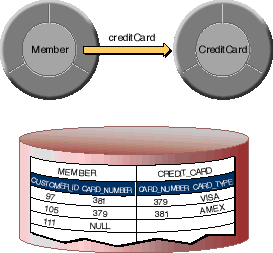
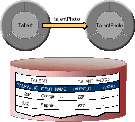
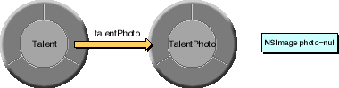

Table of Contents
Table of Contents  Next Section
Table of Contents
Next Section
Table of Contents  Previous Section
Previous Section
Note: Occasionally, a mandatory to-one relationship doesn't resolve to a destination object. For example, suppose your application's Movie database contains legacy data for which relational integrity constraints weren't strictly enforced. As a result, some Movies don't have corresponding Studios even though the Movies-to-Studios relationship is mandatory. The techniques for handling these errant to-one relationships are the same as those for handling optional to-one relationships.
You can model an optional to-one relationship many different ways, depending on how you represent the relationship in the database-as a foreign key to primary key join or as a primary key to primary key join.
Note: For to-one relationships, Enterprise Objects Framework doesn't support primary key to foreign key joins. The destination join attribute in a to-one relationship must be the destination entity's primary key.
Using a foreign key to primary key join, you include the destination row's primary key in the source row. For example, in the relationship shown in Figure 24, the creditCard relationship's source table (MEMBER) has a foreign key (CARD_NUMBER) to the destination table (CREDIT_CARD). Using this approach, you can model an optional

Figure 24. Storing a Foreign Key in the Source Table

Figure 25. Storing a Foreign Key in the Destination Table
The exception to this is when the relationship is based on a foreign key to primary key join and the relationship's source object doesn't have a corresponding destination. Instead of creating a fault, Enterprise Objects Framework assigns null (or nil in Objective-C) to the source object's relationship property. For example, if a Member doesn't have a corresponding CreditCard, the corresponding MEMBER record's CARD_NUMBER value is NULL. When Enterprise Objects Framework sees the null-valued CARD_NUMBER attribute, it sets the Member's creditCard property to null.
This approach is a good choice when the destination object contains what are conceptually attributes of the source object. For example, conceptually photo is an attribute of a Talent object. It's implemented using a to-one relationship for performance reasons. (Photo data is very large, and isn't fetched unless-and until-it's needed.)

Figure 26. A Destination Object with null-Valued Attributes
Use a To-Many Relationship
To-many relationships use a different faulting mechanism than to-ones. A fault for a to-many relationship replaces itself with an NSArray of corresponding destination objects, and it doesn't throw an exception if it doesn't find any. If you use a to-many relationship to model an optional to-one and no destination object exists, the array is simply empty. If the relationship does have a destination object, it's the first and only object in the array.
public void setTalentPhoto(TalentPhoto talentPhoto)In Objective-C:
{
willChange();
_talentPhotoArray.removeAllObjects();
if (talentPhoto != null)
_talentPhotoArray.addObject(talentPhoto);
}
public TalentPhoto talentPhoto()
{
willRead();
if (_talentPhotoArray.count() > 0)
return _talentPhotoArray.objectAtIndex(0);
return null;
}
- (void)setTalentPhoto:(TalentPhoto *)talentPhoto
{
[self willChange];
[_talentPhotoArray removeAllObjects];
if (_talentPhotoArray)
[_talentPhotoArray addObject:talentPhoto];
}
- (id)talentPhoto
{
if ([_talentPhotoArray count])
return [_talentPhotoArray objectAtIndex:0];
return nil;
}
In Java:
public TalentPhoto talentPhoto()In Objective-C:
{
try {
// If the receiver is a fault, sending it a willRead
// message attempts to resolve it. If the
// corresponding row doesn't exist in the database,
// an exception is thrown.
talentPhoto.willRead();
} catch (NSException e) {
talentPhoto = null;
}
return talentPhoto;
}
- (TalentPhoto *)talentPhotoSending willRead (or self in Objective-C) to a fault triggers it to fetch its corresponding enterprise object. If a Talent instance doesn't have a corresponding TalentPhoto, sending willRead to the talentPhoto property throws an exception. In the talentPhoto method above, the exception handler simply sets the property to null (first autoreleasing the talentPhoto fault in Objective-C).
{
NS_DURING
// If the receiver is a fault, sending it a self
// message attempts to resolve it. If the
// corresponding row doesn't exist in the database,
// an exception is raised.
[talentPhoto self];
NS_HANDLER
[talentPhoto autorelease];
talentPhoto = nil;
NS_ENDHANDLER
return talentPhoto;
}
For example, to handle mandatory to-one relationships with errant data (source rows that don't have corresponding destinations), you could implement the delegate method to insert the empty object, thereby supplying the missing destination object:
In Java:
public boolean databaseContextFailedToFetchObject(In Objective-C:
EODatabaseContext context,
Object object,
EOGlobalID gid)
{
// Perform a check to determine whether to intervene
if (...) {
// Set values in your object (if necesssary).
object.editingContext().insertObject(object);
return false;
}
return true;
}
- (BOOL)databaseContext:(EODatabaseContext *)contextIn the above implementations, the delegate method first checks to see if it should intervene. For example, the method might check to see if object is an instance of the TalentPhoto class. If the delegate determines that object represents a destination object that's missing from the database, the delegate queues object for insertion into the database by inserting it into its editing context. It returns false (NO in Objective-C) indicating that the delegate has handled the error and that the EODatabaseContext shouldn't throw an exception.
failedToFetchObject:(id)object
globalID:(EOGlobalID *)gid
{
// Perform a check to determine whether to intervene
if (...) {
// Set values in your object (if necesssary).
[[object editingContext] insertObject:object];
return NO;
}
return YES;
}
To model a many-to-many relationship in a database, you have to create an intermediate table (also known as a correlation or join table). For example, the database for employees and projects might have EMPLOYEE, PROJECT, and EMP_PROJ tables, where EMP_PROJ is the correlation table. The appendix "Entity-Relationship Modeling" provides more information on the tables behind a many-to-many relationship.
Given the relational database representation of a many-to-many, how do you get the object model you want? You don't want to see evidence of the correlation table in your object model, and you don't want to write code to maintain database correlation rows. With Enterprise Objects Framework, you don't have to. Simply use flattened relationships as described in the chapter "Using EOModeler" to hide your correlation tables.
A model with the following features has the effect of hiding the EMP_PROJ correlation table from its object model altogether:
However, what do you do when a correlation table contains extra attributes that are interesting? For example, the MOVIE_ROLE table in the sample Movies database is a correlation table between movies and the actors who star in them. In addition to foreign keys for MOVIE and TALENT, the MOVIE_ROLE table also contains the name of the role the actor plays in the film. In this case, MovieRole enterprise objects actually have a place in the object model even though they're fetched from a correlation table.
If you want to programmatically access both a Movie's roles and its actors directly from the Movie object, you should do the following:
Instead, if you create an actors method that traverses the object graph through the Movie's MovieRole objects, you avoid any consistency problems.
For display purposes, you don't even need an accessor method to bypass a correlation object. Instead, you can use key paths. For example, you can use the key path roles.talent to access a Movie's Talent objects in a master-detail configuration between a Movie EODisplayGroup and a Talent EODisplayGroup.
Table of Contents Next Section